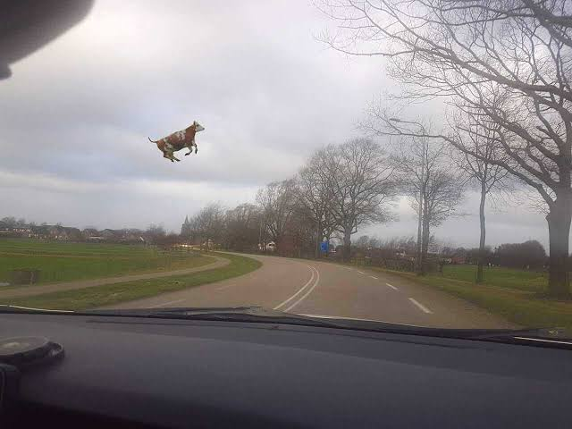
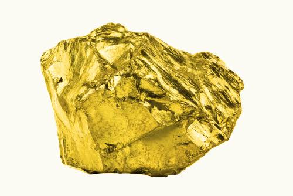
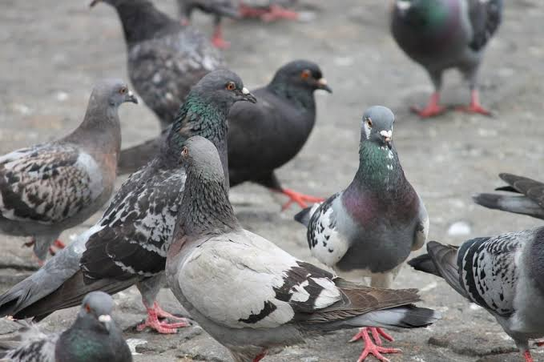
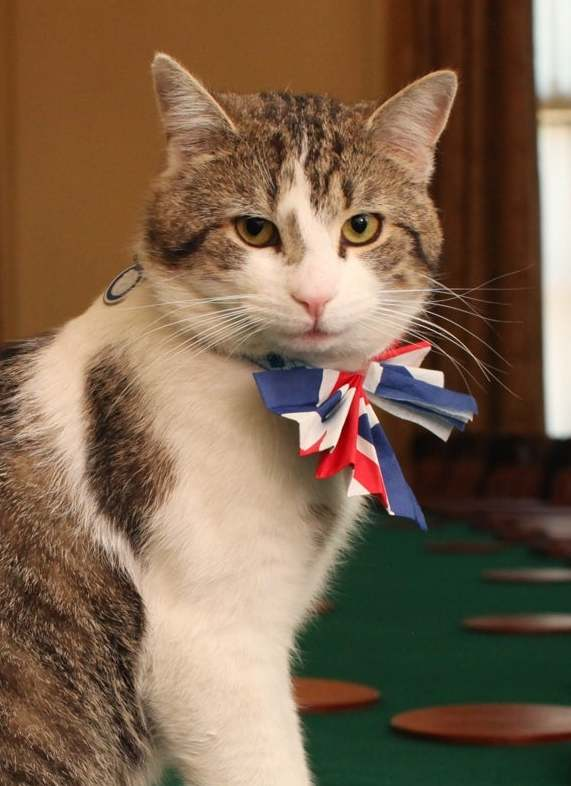
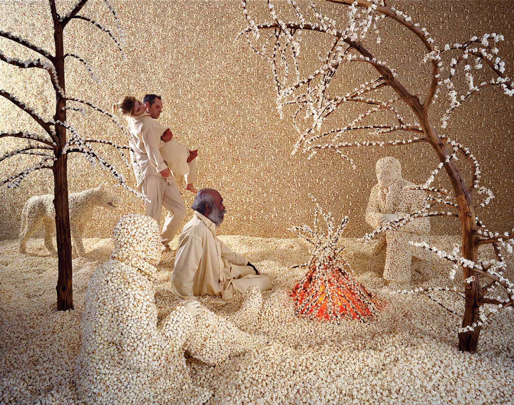

Bois inteligentes
Bois começam a voar na Nova Zelândia, autoridades estão confusas.

Cientistas descobrem novo elemento
Cientistas descobrem elemento químico com número atômico 120. Chamado de Ourina.

Corruptos honestos
Corruptos brasileiros admitem roubar muito em reunião particular.
Carro voador
General Electric desenvolve carro voador movido a plutônio, manutenção preocupa mecânicos: "Como faremos para mantê-lo no ar?"

Pombos espiões aposentados
Governo confirma que pombos da praça central eram, na verdade, agentes secretos desde 1998.

Internet mais lenta aos domingos
Estudo revela que a internet fica mais lenta aos domingos porque "ela também merece descansar", diz especialista.
Gato vira prefeito
Cidade do interior elege gato de rua como prefeito e índice de aprovação chega a 98%.

Chuva de pipoca
Meteorologistas preveem chuva de pipoca amanteigada para o fim de semana em todo o litoral.
